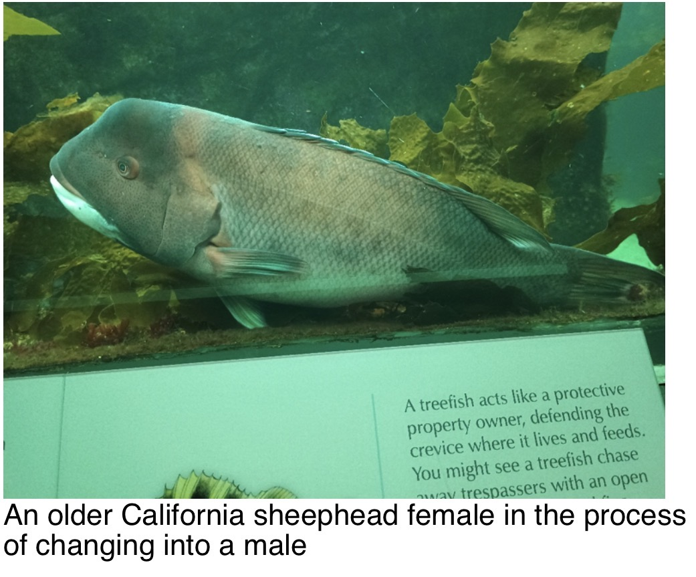

In 30 Seconds
Quick Facts
- Family
- Labridae — wrasses
- Exhibit
- Kelp Forest
- Range
- Monterey Bay to the Sea of Cortez; uncommon north of Point Conception
- Size
- Up to about 3 ft (91 cm), 36 lb (16.3 kg)
- Diet
- Sea urchins, crabs, lobsters, mollusks and other hard-shelled animals
Identification
Feeding and Teeth
Sex Change and Reproduction

Day and Night Behavior
Kelp Forest Connections
Conservation
Scientific Name and Taxonomy
Visitor Questions
Do they really change sex? Yes. Some adult females transition into males.
Why the large teeth? They help dislodge and crush shellfish and sea urchins.
Where can I see one? Look in the Monterey Bay Aquarium Kelp Forest exhibit.
Do they sleep? They shelter at night, sometimes in mucus cocoons.
Naturalist Species Highlight — February 4, 2026
Original Field Note context: The Naturalist update reported that California sheephead had been reassigned from Semicossyphus to Bodianus. It identified the reported new combination as Bodianus pulcher.
Scientific caution: The author described the suggested explanation—that Semicossyphus was not sufficiently distinct from hogfishes—as a guess, rather than a conclusion drawn from a reviewed taxonomic paper. The report should not be presented as independently established evidence for why the name changed.
Highlight facts: Reported name: Bodianus pulcher; former genus: Semicossyphus; topics: wrasses, classification and taxonomy.
Open Naturalist Field Notes → Species Highlights → California Sheephead
Primary species information and title photograph: © Monterey Bay Aquarium. Original California sheephead species page ↗. Locally stored image for offline reference. Attribution does not itself grant a license for reuse.
Additional background: Naturalist Field Notes, February 4, 2026. Species name follows the Aquarium page; the alternative name is discussed in the taxonomy section.